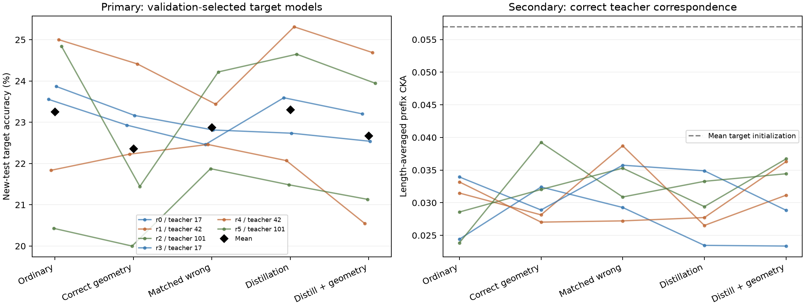

新测试准确率：普通训练 23.26%；正确几何对齐 22.36%；答案匹配错配 22.88%；输出蒸馏 23.31%；输出蒸馏＋正确对齐 22.68%。
正确几何对齐 − 普通训练：-0.89 个百分点（教师簇描述性区间 -1.64 至 -0.22；六次重复中 1/6 为正）；正确几何对齐 − 答案匹配错配：-0.51 个百分点（教师簇描述性区间 -1.74 至 +0.40；六次重复中 3/6 为正）；输出蒸馏＋正确对齐 − 输出蒸馏：-0.63 个百分点（教师簇描述性区间 -0.96 至 -0.34；六次重复中 0/6 为正）。
尚未同时支持全部预定功能判断：正确几何对齐 优于 普通训练、正确几何对齐 优于 答案匹配错配、输出蒸馏＋正确对齐 优于 输出蒸馏未在三个教师簇上得到一致正优势。CKA 改善不能替代准确率改善。这个结果限定于本次固定损失权重、标签预算与随机初始化目标模型，不否定其他训练设置。

| 条件 | 选定检查点准确率 | 1200步准确率 | 辅助正确CKA | 答案均值去除后正确−错配CKA |
|---|---|---|---|---|
| 普通训练 | 23.26% | 23.37% | 0.0292 | +0.0142 |
| 正确几何对齐 | 22.36% | 22.32% | 0.0313 | +0.0038 |
| 答案匹配错配 | 22.88% | 22.32% | 0.0329 | +0.0076 |
| 输出蒸馏 | 23.31% | 22.71% | 0.0292 | +0.0108 |
| 输出蒸馏＋正确对齐 | 22.68% | 22.81% | 0.0318 | +0.0086 |
| 重复 / 源教师 | 普通训练 | 正确几何对齐 | 答案匹配错配 | 输出蒸馏 | 输出蒸馏＋正确对齐 |
|---|---|---|---|---|---|
| r0 / 教师 17 | 23.55% | 22.93% | 22.46% | 23.59% | 23.20% |
| r1 / 教师 42 | 21.84% | 22.23% | 22.46% | 22.07% | 20.55% |
| r2 / 教师 101 | 20.43% | 20.00% | 21.88% | 21.48% | 21.13% |
| r3 / 教师 17 | 23.87% | 23.16% | 22.81% | 22.73% | 22.54% |
| r4 / 教师 42 | 25.00% | 24.41% | 23.44% | 25.31% | 24.69% |
| r5 / 教师 101 | 24.84% | 21.45% | 24.22% | 24.65% | 23.95% |
所有差值单位为百分点。六次重复共享三个冻结教师与同一测试集；不能把六次重复当成六次独立源训练。区间穷举经验bootstrap，分别列出6⁶个目标/支持集重采样及3³个教师簇重采样。它们是未经多重比较校正的描述性区间；三个共享历史数据世界的源教师不足以支持总体显著性结论。
| 比较 | 均值 | 六次差值 | 教师簇均值 | 条件区间 | 教师簇区间 | 1200步均值 |
|---|---|---|---|---|---|---|
| 正确几何对齐 − 普通训练 | -0.89 | -0.62, +0.39, -0.43, -0.70, -0.59, -3.40 | 17: -0.66 / 42: -0.10 / 101: -1.91 | -1.99 至 -0.12 | -1.64 至 -0.22 | -1.04 |
| 正确几何对齐 − 答案匹配错配 | -0.51 | +0.47, -0.23, -1.87, +0.35, +0.98, -2.77 | 17: +0.41 / 42: +0.37 / 101: -2.32 | -1.66 至 +0.49 | -1.74 至 +0.40 | -0.00 |
| 输出蒸馏＋正确对齐 − 输出蒸馏 | -0.63 | -0.39, -1.52, -0.35, -0.20, -0.62, -0.70 | 17: -0.29 / 42: -1.07 / 101: -0.53 | -1.02 至 -0.35 | -0.96 至 -0.34 | +0.10 |
| 长度 | 普通训练 | 正确几何对齐 | 答案匹配错配 | 输出蒸馏 | 输出蒸馏＋正确对齐 |
|---|---|---|---|---|---|
| 10 | 31.05% | 30.57% | 30.57% | 30.96% | 31.25% |
| 15 | 26.82% | 24.64% | 26.66% | 26.04% | 25.33% |
| 20 | 19.40% | 20.61% | 19.01% | 21.61% | 20.41% |
| 25 | 19.82% | 19.01% | 19.95% | 20.15% | 18.36% |
| 30 | 19.17% | 16.99% | 18.20% | 17.77% | 18.03% |
| 重复 | 普通训练 | 正确几何对齐 | 答案匹配错配 | 输出蒸馏 | 输出蒸馏＋正确对齐 |
|---|---|---|---|---|---|
| r0 | 24.02% | 22.93% | 22.03% | 23.98% | 23.40% |
| r1 | 22.42% | 23.20% | 23.12% | 21.13% | 21.84% |
| r2 | 20.74% | 19.77% | 20.12% | 20.82% | 20.78% |
| r3 | 23.48% | 22.42% | 22.30% | 22.93% | 22.70% |
| r4 | 25.00% | 24.41% | 23.44% | 24.77% | 24.18% |
| r5 | 24.53% | 21.21% | 22.93% | 22.62% | 23.95% |
数学恒等式 recoils(x)=descents(x⁻¹)。源教师在取逆输入上查询下降数；目标模型在测试时仅接收原输入x并回答recoils，不使用教师或取逆。所有目标从随机初始化训练。每次重复共256个目标标签：192个参与梯度，64个用于400、800、1200步的检查点选择。每种条件共享初始化、批次顺序与随机种子，均训练1200步；最高验证准确率优先，平局按验证交叉熵、较早步数选择。
几何项为同长度批次内ONE_END隐藏向量的1−线性CKA，固定权重0.3；蒸馏使用完整词表输出、温度2、权重1。错配仅在训练集中同长度、同真实答案的样本间固定循环交换；单例对三个几何条件均排除。目标监督及蒸馏的训练输入没有扩大：均仅使用192个训练样本。没有超参数搜索或测试反馈。
源预训练已经用了大量监督，教师辅助条件获得额外的源知识；正确取逆对应是实验提供的规则。这个实验检验施加几何约束的功能作用，不检验模型自行发现规则。对少标签随机初始化目标的阴性结果也不能推广到预训练目标、其他几何权重或更多标签。
| 源种子 | 独立审计总体准确率 | 10 | 15 | 20 | 25 | 30 |
|---|---|---|---|---|---|---|
| 17 | 99.84% | 100.00% | 100.00% | 100.00% | 100.00% | 99.22% |
| 42 | 99.92% | 100.00% | 100.00% | 100.00% | 100.00% | 99.61% |
| 101 | 99.92% | 100.00% | 100.00% | 100.00% | 100.00% | 99.61% |
三源均通过预定总体99%、每长度97%的门槛。审计共1280例，与训练/验证/最终测试完全独立；源模型权重未改变。
每长度固定前128例，五长度等权平均。匹配错配保留至少3例的答案层，正确与错配使用相同保留行；答案均值残差也在这些相同行上计算。移除答案均值不能移除全部输出信息，CKA上升也不等于准确率上升。辅助规则在训练已经开始、最终测试未开启时保存；它不参与检查点或模型选择。
| 条件 | 全体正确 | 匹配正确 | 匹配错配 | 匹配差值 | 残差正确 | 残差错配 | 残差差值 |
|---|---|---|---|---|---|---|---|
| 目标初始化 | 0.0570 | 0.0577 | 0.0574 | 0.0003 | 0.0985 | 0.0589 | 0.0396 |
| 普通训练 | 0.0292 | 0.0294 | 0.0291 | 0.0003 | 0.0487 | 0.0345 | 0.0142 |
| 正确几何对齐 | 0.0313 | 0.0312 | 0.0309 | 0.0003 | 0.0414 | 0.0376 | 0.0038 |
| 答案匹配错配 | 0.0329 | 0.0328 | 0.0330 | -0.0002 | 0.0459 | 0.0383 | 0.0076 |
| 输出蒸馏 | 0.0292 | 0.0288 | 0.0292 | -0.0004 | 0.0483 | 0.0375 | 0.0108 |
| 输出蒸馏＋正确对齐 | 0.0318 | 0.0314 | 0.0318 | -0.0004 | 0.0492 | 0.0407 | 0.0086 |
| 重复 | 条件 | 选定更新 | 验证准确率 |
|---|---|---|---|
| r0 | 普通训练 | 800 | 20.31% |
| r0 | 正确几何对齐 | 400 | 25.00% |
| r0 | 答案匹配错配 | 400 | 20.31% |
| r0 | 输出蒸馏 | 400 | 17.19% |
| r0 | 输出蒸馏＋正确对齐 | 400 | 20.31% |
| r1 | 普通训练 | 400 | 15.62% |
| r1 | 正确几何对齐 | 400 | 18.75% |
| r1 | 答案匹配错配 | 800 | 20.31% |
| r1 | 输出蒸馏 | 800 | 23.44% |
| r1 | 输出蒸馏＋正确对齐 | 400 | 23.44% |
| r2 | 普通训练 | 400 | 25.00% |
| r2 | 正确几何对齐 | 800 | 26.56% |
| r2 | 答案匹配错配 | 400 | 29.69% |
| r2 | 输出蒸馏 | 400 | 25.00% |
| r2 | 输出蒸馏＋正确对齐 | 400 | 25.00% |
| r3 | 普通训练 | 400 | 17.19% |
| r3 | 正确几何对齐 | 800 | 18.75% |
| r3 | 答案匹配错配 | 400 | 20.31% |
| r3 | 输出蒸馏 | 800 | 26.56% |
| r3 | 输出蒸馏＋正确对齐 | 400 | 25.00% |
| r4 | 普通训练 | 1200 | 28.12% |
| r4 | 正确几何对齐 | 1200 | 29.69% |
| r4 | 答案匹配错配 | 1200 | 31.25% |
| r4 | 输出蒸馏 | 400 | 26.56% |
| r4 | 输出蒸馏＋正确对齐 | 400 | 26.56% |
| r5 | 普通训练 | 800 | 26.56% |
| r5 | 正确几何对齐 | 800 | 25.00% |
| r5 | 答案匹配错配 | 400 | 25.00% |
| r5 | 输出蒸馏 | 400 | 21.88% |
| r5 | 输出蒸馏＋正确对齐 | 1200 | 17.19% |
本节在主实验测试成绩揭晓后追加；没有重训、调参或改变检查点。控制偏置线性CKA的样本数依赖后，每长度相同12例：正确对齐的训练CKA为 0.969，验证CKA为 0.250，新测试CKA为 0.215；普通训练的新测试CKA为 0.217。这描述了训练集对齐拟合与新输入泛化之间的差距，不能据此声称高泛化CKA没有功能价值。
完整事后诊断 · 诊断规则与时间 · 逐种子逐长度核验结果
新建审计1280例、最终测试2560例及六组各256个支持样本。它们的完整八状态轨道均排除原始1600万条输入与487032个此前本地输入，并且各组互不相交。所有30次训练和检查点选择完成后才开启最终测试。独立核验状态：passed。
{
"status": "passed",
"completed_utc": "2026-10-07T00:38:47.979571+00:00",
"data": {
"examples": 5376,
"eight_state_orbit_inputs": 43008,
"original_inputs_rescanned": 16000000,
"prior_local_input_keys_rechecked": 487032,
"all_source_inverse_labels_verified": true,
"all_support_mismatches_train_only_length_and_answer_preserving": true
},
"accuracy_endpoints_checked": 60,
"validation_selections_replayed": 30,
"original_attention_test_replays": 60,
"test_samples_per_replay": 40,
"maximum_original_attention_logit_or_hidden_error": 2.002716064453125e-05,
"maximum_teacher_replay_error": 1.33514404296875e-05,
"source_checkpoint_hashes_verified": 3,
"target_initializations_recreated": 6,
"paired_batch_schedules_recreated": 6,
"all_30_fits_complete_before_test_opening": true,
"auxiliary_registered_before_test_opening": true,
"gram_scores_independently_checked": 1650,
"maximum_gram_covariance_error": 1.1102230246251565e-16
}主实验预注册 · 辅助CKA规则 · 数据审计 · 源模型门槛 · 30次训练的准确率 · 完整统计 · 逐长度几何 · 独立核验 · 完成与哈希清单 · 可导出图PDF
OPENBLAS_NUM_THREADS=2 .venv/bin/python -m experiments.inverse_functional_alignment teachers OPENBLAS_NUM_THREADS=2 .venv/bin/python -m experiments.inverse_functional_alignment train OPENBLAS_NUM_THREADS=2 .venv/bin/python -m experiments.inverse_functional_alignment evaluate OPENBLAS_NUM_THREADS=2 .venv/bin/python -m experiments.inverse_functional_auxiliary run OPENBLAS_NUM_THREADS=2 .venv/bin/python -m experiments.inverse_functional_verify OPENBLAS_NUM_THREADS=2 .venv/bin/python -m experiments.inverse_functional_report OPENBLAS_NUM_THREADS=2 .venv/bin/python -m experiments.inverse_functional_finalize